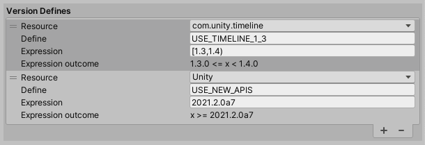

Defining symbols based on Unity and project package versions
If you need to compile different code in an assembly according to whether a project uses specific versions of Unity or of a package, you can add entries to the Version Defines list. This list specifies rules for when a symbol should be defined. For version numbers, you can specify a logical expression that evaluates to a specific version or a range of versions.
要有条件地定义符号，请执行以下操作：
Select the Assembly Definition asset for the assembly to view its properties in the Inspector.
2.在 Version Defines 部分中，单击 + 按钮以将条目添加到列表中。
3.设置属性：
Resource: choose Unity or the package or module that must be installed in order for this symbol to be defined
The Expression outcome shows which versions the expression evaluates to. If the outcome displays, Invalid, then expression syntax is incorrect.
The following example defines the symbol, USE_TIMELINE_1_3, if the project uses Timeline 1.3 and defines, USE_NEW_APIS, if the project is opened in Unity 2021.2.0a7, or later:

4.单击 Apply。
在程序集定义中定义的符号仅在为该定义创建的程序集中的脚本范围内。
Note that you can use the symbols defined using the Version Defines list as Define Constraints. Thus you could specify that an assembly should only be used when specific versions of a given package are also installed in the project.
Version Define expressions
You can use expressions to specify an exact version or a range of versions. A Version Define expression uses mathematical range notation.
A square bracket, “[]” designates that the range includes the endpoint:
[1.3,3.4.1] 计算为 1.3.0 <= x <= 3.4.1
圆括号“()”指定范围不包括端点：
(1.3.0,3.4) 计算为 1.3.0 < x < 3.4.0
可以在单一表达式中混合两种范围类型：
[1.1,3.4) 计算为 1.1.0 <= x < 3.4.0
(0.2.4,5.6.2-preview.2] 计算为 0.2.4 < x <= 5.6.2.-preview.2
可以在方括号中使用单一版本指示符来指定确切版本：
[2.4.5] 计算为 x = 2.4.5
作为快捷方式，可以输入不带范围括号的单一版本指示表达式包含该版本或更高版本：
2.1.0-preview.7 计算为 x >= 2.1.0-preview.7
Note: No spaces are allowed in an expression. No wildcard characters are supported.
Unity version numbers
Current versions of Unity (and all versions that support Assembly Definitions) use a version designator with three parts: MAJOR.MINOR.REVISION, for example, 2017.4.25f1, 2018.4.29f1, and 2019.4.7f1.
The MAJOR version is the target release year, such as 2017 or 2021.
The MINOR version is the target release quarter, such as 1, 2, 3, or 4.
The REVISION designator has three parts of its own, with the format: RRzNN, where:
RR is a one or two digit revision number
z is a letter designating the release type:
a = alpha release
b = beta release
f = a normal public release
c = China release version (equivalent to f)
p = patch release
x = experimental release
NN is one or two digit incremental number
Release type designators are compared as follows:
a < b < f = c < p < x
In other words, an alpha release is considered earlier than a beta, which is earlier than a normal (f) or China (c) release. A patch release is always later than a normal or China release with the same revision number and an experimental release is later than any other release type. Note that experimental releases do not use an incremental number at the end.
Unity version numbers are allowed to have a suffix after the REVISION component, such as 2019.3.0f11-Sunflower. Any suffixes are ignored for the purpose of comparing versions.
As an example, the following expression includes any 2017 or 2018 version of Unity, but not any version in 2019 or later:
[2017,2019)
Package and module version numbers
Package and module version designators have four parts, following the Semantic Versioning format: MAJOR.MINOR.PATCH-LABEL. The first three parts are always numbers, but the label is a string. Unity packages in preview use the string, preview or preview.n, where n > 0.
See Package Versioning for more information about package version numbers.
For example, the following expression includes all versions of a package with MAJOR.MINOR versions between 3.2 and 6.1 (inclusive):
using UnityEditor;
using UnityEditor.Compilation;
public static class AssemblyLister
{
[MenuItem("Tools/List Player Assemblies in Console")]
public static void PrintAssemblyNames()
{
UnityEngine.Debug.Log("== Player Assemblies ==");
Assembly[] playerAssemblies =
CompilationPipeline.GetAssemblies(AssembliesType.Player);
foreach (var assembly in playerAssemblies)
{
UnityEngine.Debug.Log(assembly.name);
}
}
}